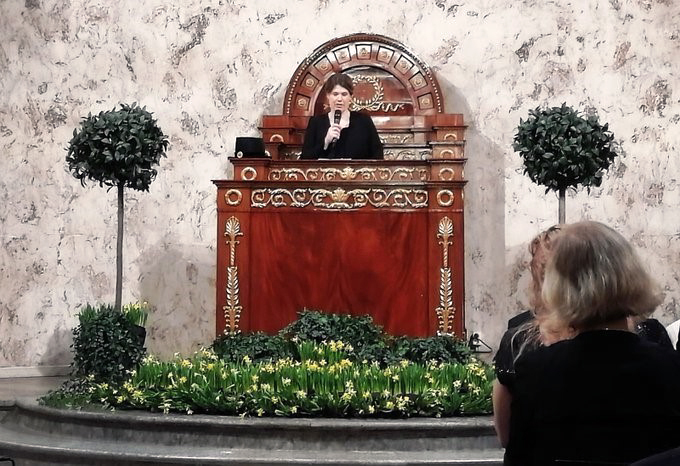

Research highlights and the Cell Fate Lab in the media:
23 December 2020
Congratulations to Cecilia for the publication: Cell Volume (3D) Correlative Microscopy Facilitated by Intracellular Fluorescent Nanodiamonds as Multi-Modal Probes (Prabhakar et al., 2020, Nanomaterials). Thank you to the collaborators!
16 November 2020
The Academy of Finland awards the InFLAMES Flagship, including Cecilia as one of the InFLAMES group leaders, funding for three years: InFLAMES Receives €5.6M in Funding. This joint effort of the University of Turku and Åbo Akademi University is lead by professor Sirpa Jalkanen and joins together a plethora of top researchers, biotech and pharmaceutical companies as well as public partners into a immunological research and development cluster. Find out more on the FlagShip on its gorgeous homepage: InFLAMES.
17 November 2020
Congratulations to Marika, Daniel, Freddy and Cecilia for publication of their review article: From structural resilience to cell specification — Intermediate filaments as regulators of cell fate (Sjöqvist et al., 2020, FASEB J).
27 October 2020
Freddy represented the lab in the ÅAU Bio Webinar series (Turku, Finland) with a presentation titled “Notch signaling and Vimentin: Understanding mechanosensing in the vasculature”.
26 October 2020
Congratulations to Valeriy and Cecilia on their second publication within two weeks: iGIST-A Kinetic Bioassay for Pertussis Toxin Based on Its Effect onInhibitory GPCR Signaling (Paramonov et al., 2020, ACS Sensors). Thank you to our collaborators Arto Pulliainen and Adolfo Rivero-Müller.
12 October 2020
Congratulations to Valeriy and Cecilia for the publication: In vitro Targetability Validation of Peptide-Functionalized Mesoporous Silica Nanoparticles in the Presence of Serum Proteins (Paramonov et al., 2020, Front Chem). Thank you to the Adolfo Rivero-Müller and Mika Lindén labs for collaboration.
25 September 2020
Congratulations to Christian on the day of his PhD thesis defence!
- Doktorsavhandling om Notch-proteinets växelverkan med cellens SUMO-proteiner och keratinproteiner (ÅAU press release)
- Cellular regulation of the Notch signaling pathway by Notch-interacting proteins (electronic version of the thesis in Doria, ÅAU)
22 September 2020
Janine represented the lab at the Institute of Materials Technology meeting (Eindhoven, the Netherlands) with a presentation titled “Mechanobiological control of sprouting angiogenesis”.
10 September 2020
Thank you to the European Commission for granting Cecilia, the Cell Fate lab and consortium partners four-year H2020 funding for the project “Tumor lymph node on a chip”. Cecilia’s interview on the project: Ny plattform ska göra cancerbehandling mera exakt (ÅAU News).
5 September 2020
Congratulations to Ezgi, Cecilia and Marjaana for the publication: Rational evaluation of human serum albumin coated mesoporous silica nanoparticles for xenogenic-free stem cell therapies (Özliseli et al., 2020, Colloids Surf). Thank you to the Jessica Rosenholm lab and other collaborators!
1 September 2020
Cecilia featured in the European Vascular Biology Organisation’s newsletter: Spotlight on EVBO member - professor Cecilia Sahlgren.
29 June 2020
Congratulations to Cecilia for the publication: Three-dimensional single-cell imaging for the analysis of RNA and protein expression in intact tumour biopsies (Tanaka et al., 2020, Nat Biomed Eng). Thank you to the Per Uhlén lab and all other collaborators!
11 June 2020
Congratulations to Daniel for being awarded a Sigrid Juselius Foundation postdoctoral fellowship for the project “Dlk1 as a regulator of Notch and TGF-B in breast cancer” to be conducted in the Vince Luca lab at Moffitt Cancer Center, Tampa, USA.
1 June 2020
Congratulations to Iida for continuing as a PhD student in the ÅAU Cell Fate lab after completing her MSc studies with us. Happy to keep you Iida!
29 May 2020
Congratulations to Rob, Cecilia and Oscar for the publication: Computational characterization of the dish-in-a-dish, a high yield culture platform for endothelial shear stress studies on the orbital shaker (Driessen et al., 2020, Micromachines). Thank you to all the collaborators!
28 May 2020
Cecilia’s interview by ÅAU news on the SignalSheets Academy of Finland project: Forskning av tarmen och hjärtat finansieras med en miljon av Finlands Akademi (ÅA, Aktuellt; 2020).
27 May 2020
Thank you to the Academy of Finland for awarding Cecilia and the Cell Fate lab four-year Academy Project funding for the project “Multilayer mechanosignalling in vascular homeostasis (SignalSheets)”.
1 May 2020
Welcome Noora Virtanen, our new PhD student at the ÅAU Cell Fate lab!
18 March 2020
Thank you to the Sigrid Jusélius foundation for awarding Cecilia and the Cell Fate lab three-year funding for the project “Notch counteracts replication stress to prevent cancer cell senescence”.
6 March 2020
Congratulations to Cecilia on the day of her professor installation ceremony at the ÅAU.
1 March 2020
Cecilia’s interview in the Sigrid Jusélius Foundation’s Annual report 2019: Mina utomlandsvistelser som forskare var avgörande.
26 February 2020
Congratulations to Tommaso, Oscar and Cecilia for the publication: Lateral induction limits the impact of cell connectivity on Notch signaling in arterial walls (Ristori et al., 2020, Int J Numer Method Biomed Eng). Thank you to Sandra Loerakker for the collaboration!
21 February 2020
Congratulations to Daniel on the day of his PhD thesis defence!
- Doktorsavhandling i cellbiologi: Daniel Antfolk (ÅAU press release)
- Regulation of Notch Signaling by Intracellular Trafficking (electronic version of the thesis in Doria, ÅAU).
19 February 2020
Welcome Kai-Lan (Kalen) Lin, our new lab technician/lab manager at the ÅAU Cell Fate lab.
7 January 2020
Congratulations to Cecilia, Rasmus and Kati for the publication: Nanoparticles carrying fingolimod and methotrexate enables targeted induction of apoptosis and immobilization of invasive thyroid cancer (Niemelä et al., 2020, Eur J Pharm Biopharm). Thank you to the Jessica Rosenholm and John Eriksson labs as well as all other collaborators!